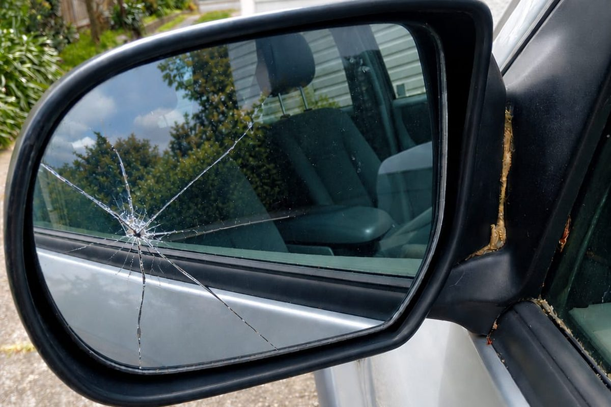

Smashed side window, shattered rear screen, cracked mirror or damaged sunroof — tell us what's broken and we'll get you sorted.
Side windows and rear windscreens are usually made from toughened glass, which is designed to break into small pieces rather than crack like a windscreen does. That means damage tends to be sudden and obvious, often after a break-in, a stray stone or a slammed door, and it's rarely something that can be repaired.
If a side or rear window has gone, the sooner you can get it covered and replaced the better. Open glass leaves your vehicle exposed to weather and theft. Clear away any glass fragments carefully, and ask us about a temporary cover while you wait.
Wing mirror glass and sunroof glass can also be replaced. Tell us what you've got and your vehicle's details, and we'll sort out the right parts.
Parts availability and what can be replaced depends on the vehicle — we'll confirm when we quote.